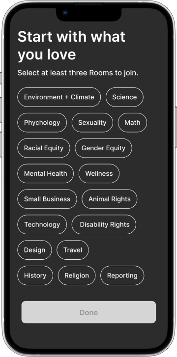
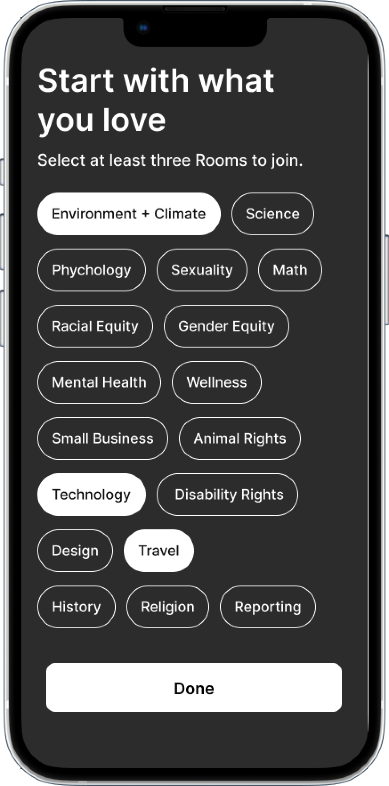
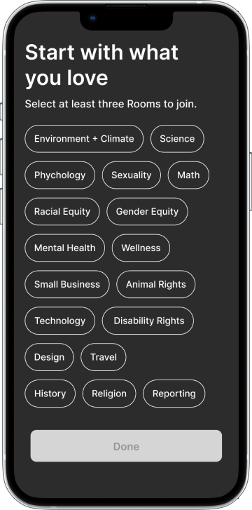
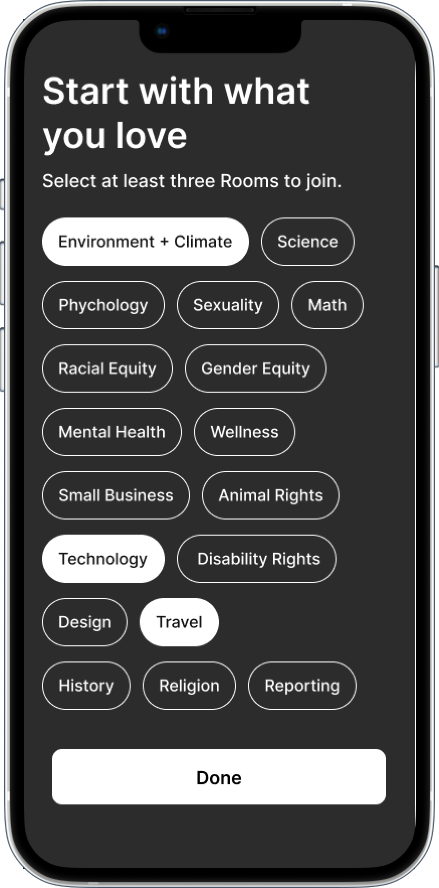
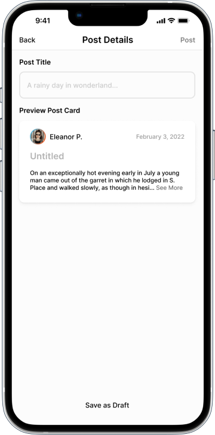
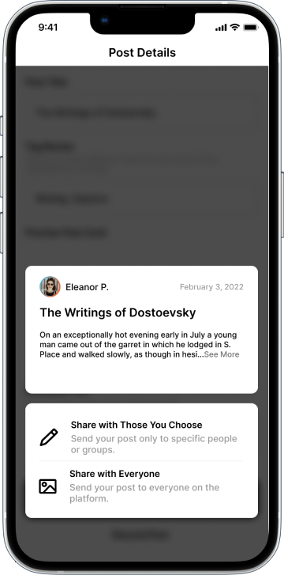
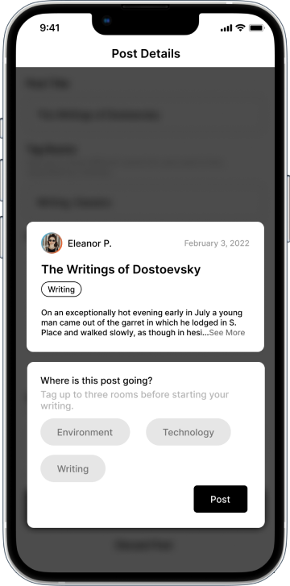
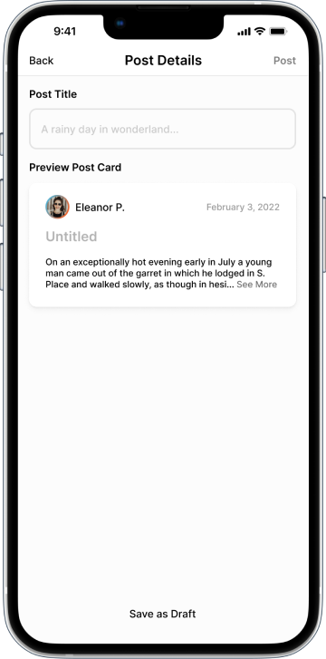
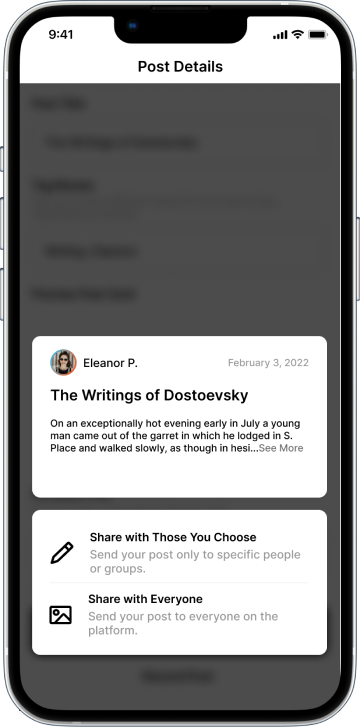
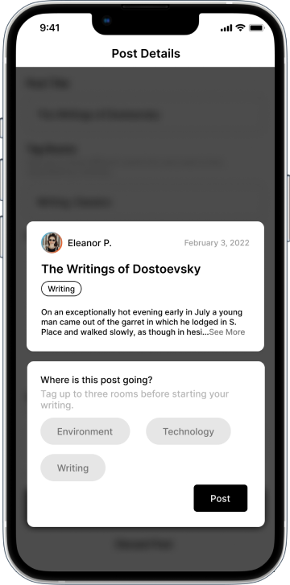

UX Design Lead
4 Designers
5 Researchers
1 Product Strategist
Google Forms
Figma
Maze
8 weeks
If you remember one thing about this project...
Social Media has serious impacts on users' mental health.
In collaboration with the founder of The Serious Type, we designed a new kind of social media app that doesn’t.
I led a Tech Fleet Design team through the first phase of work. We created a mobile MVP, an extension of Tech Fleet’s scope of work with The Serious Type, and a foundation for changing social media for the better.
Discovery
Ideation
Low Fidelity
Testing
High Fidelity
The Serious Type (TST) is a content creation platform for teens and young adults to express themselves in a productive and creative way. The TST founder aimed at increasing usage of her platform and fostering stronger connections among her audience.
I joined the project in week 3 to lead 4 Tech Fleet Designers through the remaining 6 weeks of work. We collaborated with 5 UX Researchers and 1 Product Strategist to investigate, ideate, and iterate. We kept users at the heart of the process by testing our ideas through several rounds of iteration.
Using what we learned from Research, we targeted negative mental health impacts of conventional social media. I led the effort to design a platform for users of all ages to connect around the things they love, to give and receive feedback, and to develop a sense of belonging.
The Serious Type (TST) Founder wanted to create a platform to boost engagement and reduce dropoff among current users.
We had to stay true to the ethos of the TST brand by designing for learning and positive interactions while avoiding the Dark Patterns that have made social media infamous.
A mobile-first social media MVP designed to promote healthy interactions via live learning and mentorship.
Kickoff
Academic Research
SWOT Analysis
Competitive Analysis
Survey
Interviews
Google Design Sprint
How Might We...
Sketching
Rough User Flows
Low Fidelity
Usability Tests Round 1
Mid Fidelity
Usability Tests Round 2
High Fidelity
102 Survey Responses
5 Interview Participants
Through the early weeks of the project, Tech Fleet Researchers learned about The Serious Type and our anticipated target audience, Gen Z. Learnings from academic research pointed our work towards testable assumptions.
Methods: Survey, User Interviews, Academic Research, Competitive Analysis
What we learned: Device addiction and unrealistic expectations have major negative impact on mental health. Our work needed to include positive, productive, healthy interactions as core design principles.
Survey Design and Distribution: I provided feedback to apprentices to help craft effective survey questions. I then helped to distribute the survey and analyze results.
Have taken a break from social media
Use social media to learn a new skill
Use social media “almost constantly” or “several times per day”
Say device addiction is the most negative aspect of social media
User Interviews: I helped the research team craft the first User Interview plan.
I then synthesized data from 5 User Interviews to develop team-wide insights. We saw an interesting combination of user goals that aligned with TST’s goals: exploring and learning new skills.
use Social Media for Learning or professional skills development
use Social Media in a “mindless” way in the absence of a goal
worry about the way they think others view them online


Conclusions: The survey and interview results were compelling and remarkably consistent. Users liked social media for staying in touch and learning new things. They were aware they tended to spend too much time on social media, but took breaks when they felt they needed to.
I was personally surprised by how many people use social media to learn new skills ranging from hobbies to professional skills. The principle gain for users came from the intentional use of social media, rather than the infinte, mindless scroll most social media apps rely on.
Survey and interview insights also started a team discussion around another desired outcome of our work: positive impacts on mental health.
5 Day Design Sprint
145 Sketches
6 Design Challenges
We observed a recurring theme around users’ activity on social media impacting their mental health. This was further supported by our academic research data, and was roughly consistent across ages.
This consistency spurred the Product Strategy team to see an opportunity to serve more users by providing positive social media experiences for people of all ages. We imagined a community of users and mentors making positive, creative contributions with positive impacts on the mental health of both groups.
What we learned: Through the sprint, the team gained alignment on possible opportunities. We also learned how other apps solved similar problems.
Why we did this: I love using this framework because it promotes identifying ideas that might work and getting teams aligned quickly to create testable artifacts.
Design Sprint Facillitation: I planned, facilitated and led the Design Sprint activities, schedule, and conversations.
Understand
Brainstorm
Imagine
Map
Affinity Map Conclusions: Our Affinity Map from last week provided a number of insights we could incorporate into our designs:
Learning
Keeping in touch
Career progression
Staying updated on events
Exploring specific interests
Insecurity
Distraction
Addiction
Fear of Missing Out
Privacy
How Might We... (HMW): Armed with the knowledge of what users were trying to accomplish, we jotted down some challenges to think about in the form of How Might We... questions.
I then asked the team to group similar HMWs together and make any changes needed to create a team-approved version representing each category. I chose to do this to be certain the team knew the exact problems we were attemping to solve.
Prioritize: The Product Strategy team prioritized six HMWs to focus on for this Sprint.

Sketch: There were 12 team members at this meeting. Everyone selected 2 HMWs for a Crazy 8’s sketching session. For each HMW question, we:
Even primitive, rough sketches provided a wealth of opportunities to pursue. For example, these two sketches of mine were eventually incorporated into the user profile:
Dot Voting: We voted asynchronously to select our favorite sketches from the 145 options. An interesting combination of features emerged:
Dedicated topic areas that users can follow and post into
Connecting our research with opportunities
For interactive learning, mentoring, or just hanging out
Personality and Privacy, together
Setting the tone for experience as a whole
Allow users to highlight content they want feedback on
MVP: The Product team defined an MVP based on our Research. Users need a profile, Live Sessions Pages, a way to connect with mentors, and a way to create posts.
Rough Flows: I led a discussion to create very simple user flows to get us started. These flows provided the foundation of our design work as we began to understand how the pieces might fit together.
We noted steps to the flow, charted our assumptions, and jotted down questions where we were uncertain.
Concept Definition
Low, Mid & High Fidelity
2 Rounds of Usability Tests
10 Test Participants
We had begun to circle around a concept: Users can join Rooms, attend Sessions, and create and consume posts by peers or Mentors in their Rooms. Mentors can provide feedback on a user’s work in Sessions with other users or schedule one-on-one meetups to give feedback privately.
Why we did this: We believed this combination of features would allow users a creative space focused on learning and improvement.
How I helped: As design lead, my primary focus was ensuring each voice was heard. This led to fruitful discussions and a concept none of us had thought of on our own.


Users were able to figure out our unconventional home screen, but swiping in two directions was too much. We observed just enough hesitation to make us reconsider this approach.
The biggest challenge users faced was finding the Create button. The white-on-white unlabeled button was confusing.
Users were also not totally clear on how hashtags impacted their posts.
Users had confusion about what Sessions were and why they would want to join one
We iterated our home screen and flows based on data from usability tests. We also created first iterations for other key MVP features: a profile page, a messaging feature, and a discover page.
I asked each team member to bring ideas for new home screen concepts. We spent synchronous time talking over our designs and bringing in the best elements from each team member. I also asked the team to begin thinking about visual design as well.
Why we did this: Our project timeline required us to end with a High Fidelity MVP in 8 weeks. With only 2 weeks left, we needed to make rapid progress on both fidelity and features.
User Flows: I updated our flows to reflect the detail we had added since brainstorming features.
Research Analysis: I participated in a team-wide analysis of the first round of Usability Tests. We used observations to drive actionable insights into mid-fidelity.
Data from usability tests guided updates to key screens from low fidelity:
We updated the swiping interaction to simple tabs to access different content.
We brought the create button out of the Nav, made it significantly larger and more accessible in black and white.
We decided to feature one live session and one upcoming session with enough information for users to understand what to expect if they join.
Users can now see the rooms they follow as possible places to post. We believed this would eliminate hesitancy around hashtags as personal advertisements.
To make our MVP goal, we needed a user profile, a way to get in touch with mentors, and a discover feature

Profiles display the Rooms users participate in to encourage interaction and exploration among users.
Users have access to a calendar on their profile to keep up with any upcoming Live Sessions they have committed to.
Users can pin a post to display if they are seeking feedback.
Our research uncovered some users who were hesitant to post publicly for fear of being judged.
I added an option to send a post privately in a message and book time with a mentor directly in the message
This was the very beginning of our exploration of the Mentorship feature.
The home page is populated with content that users already follow in order to reduce the amount of mindless scrolling.
In order for that design choice to work, we needed some kind of discovery feature.
The Serious Type’s existing web page provided a basic structure we could follow.
Users can send their work privately to mentors as well as other users.
Users and mentors can set up a time to meet right in the message.
The mentorship session is saved to the private calendar on both the user and mentor’s profiles
The Research team conducted 4 Usability Tests
Insight 1: Removing in-line hashtags in the Create a Post flow was a step forward.
Insight 2: Users would like a way to vet a potential mentor.
Insight 3: Users liked being able to book a time with a mentor directly in the messaging feature, but the calendar needed to be refined (it was from a UI kit to save time).
 



 




